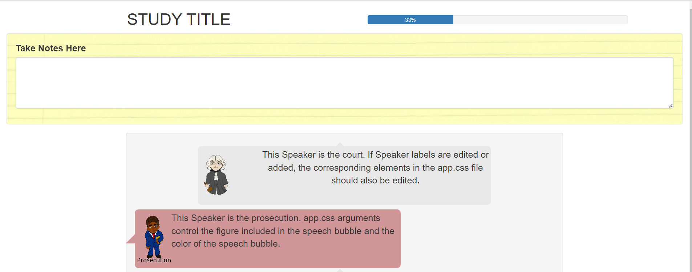
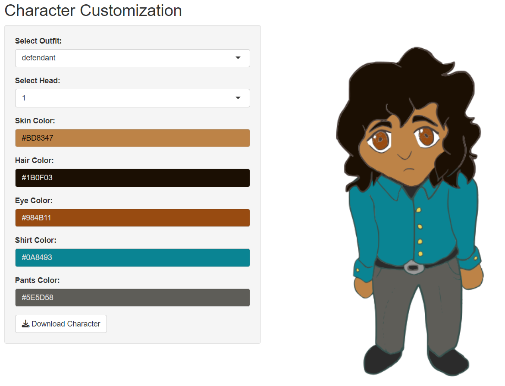

Courtr is a tool designed to assist with courtroom studies. It provides customizable figures and a study template using R Shiny, which includes a recordable notepad for participant notes, as well as color-coded speech bubbles.
Acknowledgements
This work was funded (or partially funded) by the Center for Statistics and Applications in Forensic Evidence (CSAFE) through Cooperative Agreements 70NANB15H176 and 70NANB20H019 between NIST and Iowa State University, which includes activities carried out at Carnegie Mellon University, Duke University, University of California Irvine, University of Virginia, West Virginia University, University of Pennsylvania, Swarthmore College and University of Nebraska, Lincoln.
Thank you to Richy Meleus for developing the cartoon figures used in this app.
Installation
You can install the development version of courtr from GitHub with:
# install.packages("devtools")
devtools::install_github("rachelesrogers/courtr")Getting Started
We recommend to start by using the Save_Template() function to save the study template to your device. The README.txt file in the study template provides detailed instructions on how to customize the R Shiny application. To get an idea of what the study format looks like, you can run the template without any modifications.
Save_Template("your/file/path")The testimony page of the app will look like this: 
Insert your own testimony into the “Combined_Testimony.csv” file. Then, use the Format_Testimony() to format the testimony with the appropriate tags necessary for creating the visual output. Save this formatted file as “Combined_Testimony_Formatted.csv” in your downloaded template.
unformatted_testimony <- utils::read.csv("your/file/path/Combined_Testimony.csv")
formatted_testimony <- Format_Testimony(unformatted_testimony)
write.csv(formatted_testimony, "your/file/path/Combined_Testimony_Formatted.csv")The characters used in the study can also be customized using the Edit_Figures() function. This function will pull up an R Shiny app, allowing for customization of provided figures. The figures can be downloaded and saved in “your/file/path/www” to be used in your study.
